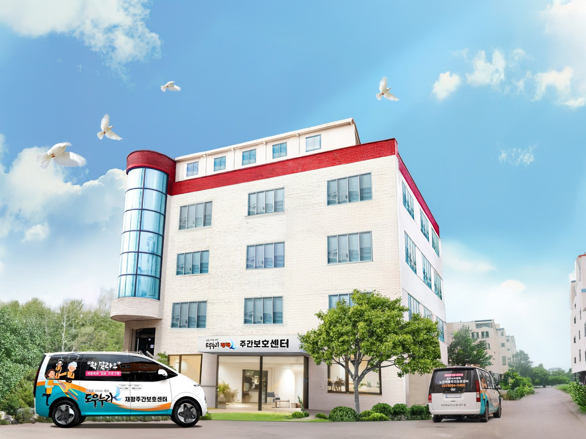

미션
협동의 힘으로 자립의 기반을 만들고, 지역과 함께 지속가능한 삶을 설계합니다.
PLUS PYEONGTAEK
사회적협동조합 플러스평택은 자활·돌봄·주거·지역자산을 연결해 주민이 지역에서 더 안정적으로 살아갈 수 있는 기반을 만듭니다.

QUICK FIND
필요한 서비스를 누르면 해당 안내로 바로 이동합니다.
ABOUT US
협동의 힘으로 취약계층의 자활과 자립을 지원하고, 일자리·돌봄·주거·지역자산을 연결하여 함께 살아가는 지역사회를 만듭니다.
협동의 힘으로 자립의 기반을 만들고, 지역과 함께 지속가능한 삶을 설계합니다.

WHAT WE DO
자활, 돌봄, 주거, 지역자산은 서로 분리된 사업이 아니라 한 사람의 안정된 삶을 함께 받치는 기반입니다.

주거비 부담을 낮추고 안정적인 장기 거주를 지원하는 사회주택입니다. 모집조건과 입주정보는 전용 시스템에서 최신 내용을 확인할 수 있습니다.
평택형 사회주택 시스템 →
자활·돌봄·사회적경제 조직이 한 공간에서 활동하는 협동자산화 거점입니다. 공간의 가치가 지역에 남고 다시 지역을 위해 쓰이는 구조를 지향합니다.
층별 입주기관 보기 →PYEONGTAEK TOGETHER MAP
평택시민이 함께 만드는 사회연대경제 및 공공일자리 지도
협동조합, 사회적기업, 마을기업, 자활기업, 사회복지시설, 공공기관 등 지역의 사회적 가치 조직과 공공일자리를 한눈에 살펴볼 수 있는 시민 참여형 지도입니다.
지도를 크게 보기지도는 별도 서비스로 운영되며, 새 창에서 전체 화면으로도 이용할 수 있습니다.
SOCIAL HOUSING
사회적협동조합 플러스평택은 취약계층과 주거지원이 필요한 주민의 주거 안정을 위해 평택형 사회주택을 운영하고 있습니다. 현재 약 100세대를 관리하며, 세부 모집대상·임대조건·공실 현황은 전용 시스템에서 안내합니다.
모집대상, 임대조건, 공실 현황 등 변동 가능한 내용은 전용 시스템에서 최신 정보를 확인해 주세요.
COOPERATIVE ASSET
자활, 돌봄, 사회적경제 조직이 한 건물에서 연결되는 지역 협동의 거점입니다. 안정적인 활동공간을 확보하고, 공간에서 만들어진 가치를 다시 지역사회로 연결하는 협동자산화 모델을 실천합니다.
HISTORY
조합의 방향을 바꾼 주요 시점만 간결하게 기록했습니다.
NEWS & GALLERY
공지와 현장 사진을 한곳에서 간결하게 확인할 수 있습니다.
플러스평택의 주요 사업과 활동 소식을 보다 쉽게 확인할 수 있도록 홈페이지를 정비하고 있습니다.
CONTACT
유관기관